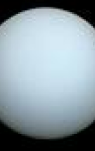

TERRA
Urano é um dos planetas mais misteriosos e intrigantes do sistema solar! Conhecido como o gigante gelado, Urano tem uma cor azul-esverdeada devido à presença de metano em sua atmosfera. Mas a coisa mais estranha sobre Urano é que ele gira de lado! Ao contrário dos outros planetas, seu eixo está inclinado a quase 98 graus, o que significa que ele "rola" ao longo de sua órbita ao redor do Sol. Isso faz com que as estações em Urano sejam superlongas, durando 21 anos cada!
Urano é um planeta cheio de surpresas! Com sua atmosfera gelada composta de hidrogênio, hélio e metano, Urano tem um tom azul-esverdeado fascinante. Ele também possui anéis finos e discretos e 27 luas conhecidas, incluindo Titania e Oberon. O que realmente diferencia Urano é seu eixo de rotação, que está quase deitado de lado, criando estações extremas e únicas. As tempestades e ventos em Urano são misteriosos e rápidos, tornando-o um dos planetas mais intrigantes para exploradores espaciais.